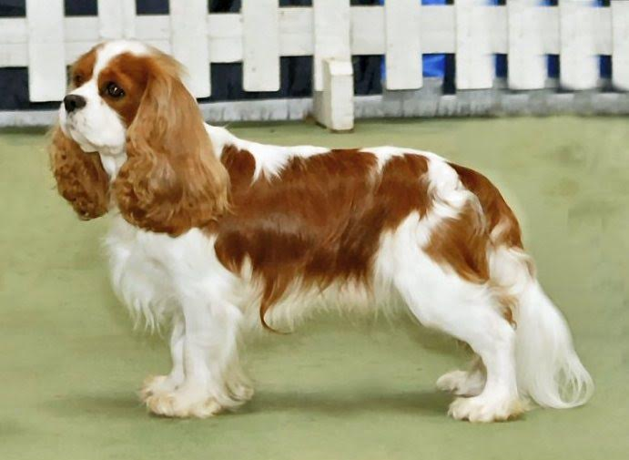

Hey, my name is Guy Peek and I have always loved dogs. My favorite dog would have to be the Cavalier King Charles. My family has two of them at home and they have been the best pets we have ever had. I took some time to learn more about these great dogs and make a webpage with my findings.
Three Facts
1. Nicknamed "The Comforter Spaniel"The Cavalier King Charles Spaniel is a small spaniel classed as a toy dog by The Kennel Club and the American Kennel Club.[2] It originated in the United Kingdom and is one of the more popular breeds in many countries. The King Charles changed inordinately in the late 17th century, when it was interbred with flat-nosed breeds. Until the 1920s, the Cavalier shared the same history as the smaller King Charles Spaniel. Breeders attempted to recreate what they considered to be the original configuration of the breed, a dog resembling Charles II's King Charles Spaniel of the Restoration.
I also researched information about the colors of the breed. Here is my findings: The breed has four recognized colours. Cavaliers which have rich chestnut markings on a pearly white background are known as Blenheim in honour of Blenheim Palace, where John Churchill, 1st Duke of Marlborough, raised the predecessors to the Cavalier breed in this particular colour. In some dogs there is a chestnut spot in the middle of the forehead: this is called the "blenheim" spot.
| Fun Facts | picture |
|---|---|
| This breed is one of the most easygoing breeds, the Cavalier King Charles Spaniel is trustworthy, friendly and easy to train. They also adapt easily to any surroundings. |  |
| It was Queen Victoria who revived the dying breed — although the original version of the dog had all but vanished and the new Cavalier King Charles Spaniel was quite different from the original. | |
| The Cavalier King Charles Spaniel is the perfect definition of a lap dog. This is a dog that loves nothing more in life than to climb up onto your lap and spend some serious quality time cuddling with you. | |